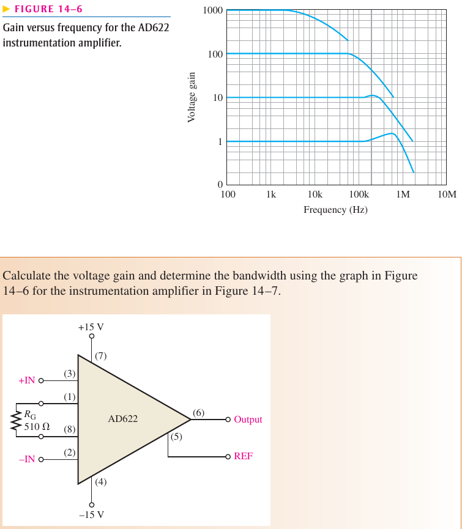
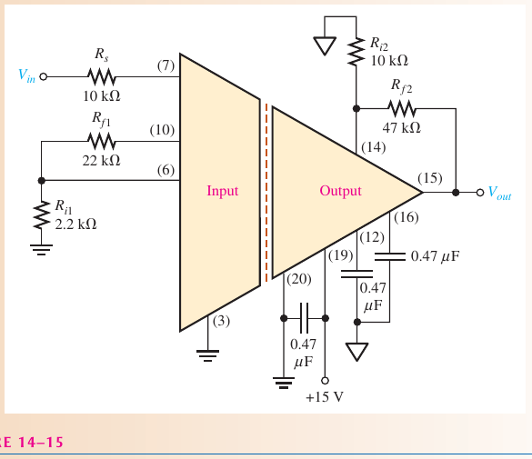
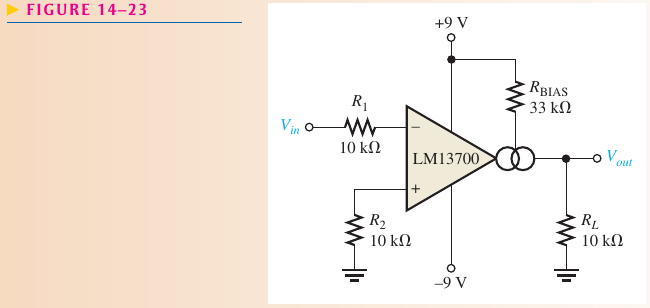
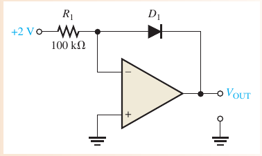

05. Special-purpose op-amp circuits and A/D–D/A conversion Instrumentation, isolation, OTA, log/antilog amplifiers, current sources and peak detectors (Floyd Chapter 14).
EASA Part-66 4.1.3 linear ICs (extension) CLO: CLO2, CLO3 Time: ≈ 5 h Questions: 104 (32 original)
Floyd 9e Ch.14 · Jaeger 5e Ch.12 §12.2, 12.5–12.6 · Book content map
🎯 After this module you will Compute IA gain and choose RG Analyse isolation amplifiers and OTAs Compute log-amplifier outputs Explain current sources and peak detectors PART 1/5
01
The special circuits Instrumentation amplifier Isolation and OTA Log/antilog Part 1 · Foundations
The instrumentation amplifier 
Floyd Figs. 14–6, 14–7 📖 Explanation for beginners Two input buffers and a difference stage: one resistor RG sets the gain and the CMRR is very high.
Part 1 · Foundations
The isolation amplifier 
Floyd Fig. 14–15 Two electrically isolated stages: input and output Optical, transformer or capacitive coupling; total gain = product of the stages 📖 Explanation for beginners No electrical path between input and output protects equipment and people from high voltages.
Part 1 · Foundations
The operational transconductance amplifier 
Floyd Fig. 14–23 📖 Explanation for beginners The OTA turns an input voltage into an output current; the bias current sets gm, so gain is electrically controllable.
Part 1 · Foundations
Log and antilog amplifiers 
Floyd Fig. 14–31 📖 Explanation for beginners A diode in the feedback path gives a voltage proportional to the logarithm of its current; the antilog circuit does the reverse (exponential).
PART 2/5
02
Methods Formula table Converters, current sources Peak detector, selection Part 2 · Methods
Formula table by circuit Circuit Key formula IA Av = 1 + 2R/RG ; Vout = Av(Vin2 − Vin1) Isolation Av = Av(vào)·Av(ra) OTA Av = gm·RL Log Vout = −VT ln(Vin/(R·IR))
📖 Explanation for beginners Each circuit has a one-line formula; identify the circuit before substituting.
Part 2 · Methods
Converters and constant-current sources Voltage-to-current and current-to-voltage converters use an op-amp to drive a fixed current into a load A constant-current source holds only within the supply limits (compliance range) 📖 Explanation for beginners Negative feedback forces the voltage across R1 to equal Vin so the load current is independent of the load.
Part 2 · Methods
The peak detector Peak detector: an op-amp as comparator charges a capacitor through a diode to the peak The capacitor holds the peak until discharged 📖 Explanation for beginners The diode sits inside the feedback loop so its 0.7 V drop is compensated.
Part 2 · Methods
Choosing the right circuit Choose an IA for small, high-impedance sources with large common-mode noise Choose isolation for high voltages or safety OTA when electrically controlled gain is needed (AM, AGC) 📖 Explanation for beginners Decide by requirement: noise, safety or variable gain.
PART 3/5
03
Worked examples from the book Instrumentation Isolation, OTA Logarithms Part 3 · Book examples
Instrumentation amplifier (Floyd Problems 1–5) Example · Floyd Problems 1–5
Av(1) = Av(2) = 101; Av = 201; Vout = 201 × 5 mV = 1.005 V; RG = 200 Ω for G = 1000; AD622 with 1.0 kΩ: G = 51.5
📖 Explanation for beginners The 225 mV common-mode part is rejected; only the 5 mV difference is amplified.
Part 3 · Book examples
Isolation and OTA (Floyd Problems 9, 14–16) Example · Floyd Problem 9
30 × 10 = 300
Example · Floyd Problems 14–16
gm = 1000 μS; Iout = 500 μA, Vout = 5 V; RL = 8.75 kΩ
📖 Explanation for beginners Mind the units: 1 μS × 1 mV = 1 nA; convert to A, V, S before multiplying.
Part 3 · Book examples
Logarithms (Floyd Problems 23, 26–27) Example · Floyd Problem 23
−0.301, 0.301, 1.70, 2.11
Example · Floyd Problems 26–27
-148 mV ; -157 mV (book: −157 mV)
📖 Explanation for beginners Use ln, not log₁₀, in the Vout formula.
PART 4/5
04
Common pitfalls Signs and units Misreading schematics Practical limits Part 4 · Pitfalls and extensions
Sign and unit traps Sign of the log output The inverting log amplifier gives a negative Vout; “increase/decrease” is ambiguous so state |Vout|.
📖 Explanation for beginners Convert nA, μA, μS to base units before calculating.
Part 4 · Pitfalls and extensions
Common misconceptions IA bandwidth falls as gain rises (Floyd Fig. 14–6) The capacitors in Fig. 14–15 are supply decouplers: changing them does not change the gain 📖 Explanation for beginners Not every component in a schematic sets the gain.
Part 4 · Pitfalls and extensions
Practical limits The basic log amplifier output is only ≈ 0.7 V (pn junction) IR and VT depend on temperature → temperature compensation needed 📖 Explanation for beginners The theory is accurate only over a range of currents and temperatures.
PART 5/5
05
Applications and summary Measurement (illustrative) Formula table Take-aways Part 5 · Applications and summary
Measurement applications on aircraft Illustrative: amplifying strain-gauge or thermocouple signals with an IA because long wires pick up common-mode noise Illustrative: isolating a high-voltage measurement from a data-acquisition input Illustrative: compressing the dynamic range of a sensor signal with a log amplifier 📖 Explanation for beginners Illustrations of principle only, not a specific system.
Part 5 · Applications and summary
Chapter 14 formula table Circuit Formula IA 1 + 2R/RG AD622 1 + 50.5 kΩ/RG OTA Iout = gm·Vin ; Av = gm·RL ; gm = K·IBIAS Log −0.025·ln(Vin/(R·IR))
📖 Explanation for beginners These four lines cover the calculations of the chapter.
Part 5 · Applications and summary
Three take-aways IA: high CMRR, gain by one resistor Isolation: safety and noise immunity OTA: current-controlled gain; Log: dynamic-range compression 📖 Explanation for beginners Next module: active filters.
◀ Trước Sau ▶
⛶ Toàn màn hình Detailed notes 1. Detailed content mapped to the books Floyd §14–1 instrumentation amplifiers (AD622, Figs 14–6/14–7); §14–2 isolation amplifiers (ISO124, 3656KG); §14–3 OTA (LM13700); §14–4 log/antilog; §14–5 converters, current sources, peak detector. See also Jaeger 5e Ch.12 §12.2, 12.5–12.6 per the syllabus map. 2. Five worked examples Example · 1
Av = 1 + 2·100k/1.0k = 201; Vout = 201 × (10 − 5) mV = 1.005 V
Example · 2
RG = 200k/999 = 200 Ω for G = 1000
Example · 3
OTA: gm = 5000 μS, Vin = 100 mV → Iout = 500 μA; RL = 10 kΩ → Vout = 5 V
Example · 4
Log amp: Vout = −0.025 ln(1.5/(47k·60n)) = -157 mV
Example · 5
Isolation: 30 × 10 = 300
3. History and theory context Instrumentation amplifiers were developed to recover small sensor signals in noise; the OTA is the ancestor of electronically controlled gain stages; log amplifiers allow multiplication and division by adding and subtracting logarithms.
4. Aircraft case study (illustrative) Illustrative: amplifying strain-gauge bridge signals with an IA and isolating high-voltage circuits. Not a description of a specific system.
5. Exam pitfalls Dropping the “1 +” in G = 1 + 50.5 kΩ/RG. Using log₁₀ instead of ln in the log amplifier. Forgetting that the common-mode part is rejected in an IA. Unit slips among μS, μA, mV. Quick self-check (10 questions, textbook originals first) Deep practice Open this module's question bank (104 + 12)
Jupyter notebook Download the notebook (already executed, real outputs):